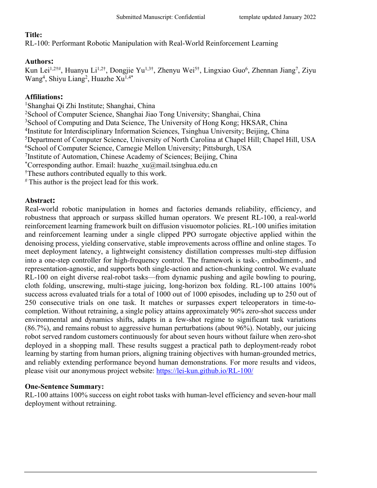

1. Paper Info
RL-100: Performant Robotic Manipulation with Real-World Reinforcement Learning
| Authors | Zichen Lei, Kun Lei, Zhaoyang Liu, Zelin Wu, Zhiyuan Xu, Huazhe Xu, et al. |
| Affiliation | Tsinghua University, Shanghai Qi Zhi Institute, Galaxea AI |
| Year | 2026 |
| Research Type | 真实机器人强化学习 / Diffusion Policy / Imitation-to-RL |
| Local Source | Lei et al. - 2026 - RL-100 Performant robotic manipulation with real-world reinforcement learning.pdf |
2. Insight & Novelty
2.1 核心问题：从"实验室成功"到"实际可靠"的最后一公里
核心洞察：当前机器人操作策略面临三重断裂：(1) 模仿学习（Imitation Learning, IL）只能复制人类示范的行为分布，无法超越教师——示范本身通常是慢速、保守的，且状态覆盖有限；(2) 强化学习（RL）理论上可以探索并优化超越人类的行为，但在高维连续动作空间中从零开始训练极不稳定，尤其在真实机器人上；(3) Diffusion Policy 作为当前最强的 visuomotor 策略表达能力框架，其多步去噪采样过程天然与真实机器人所需的高频控制（50-100Hz）矛盾，多步推理引入的延迟使部署不可行。RL-100 的核心创新在于将这三个断裂点打通为一条统一管线：以 diffusion 去噪过程作为 RL 优化的"动作空间"，通过一致性蒸馏（consistency distillation）将优化后的多步策略压缩为单步，最终实现真实机器人上的一步高频控制。
2.2 创新点问答（Q&A）
Q1: 为什么不用传统的 Gaussian policy + PPO？ 高斯策略的表达能力有限，难以建模多模态动作分布（例如抓取一个物体的多种可能方式）。Diffusion policy 通过迭代去噪建模任意复杂的条件分布 p(a|o)，能自然表达多模态。
Q2: Diffusion 多步采样怎么做实时控制？ 这正是 RL-100 的关键工程突破——先以多步 diffusion 做高质量的 RL 策略优化（离线+在线），获得接近最优的去噪轨迹后，再通过 consistency distillation 训练一个单步映射，直接从噪声映射到高质量动作，消除多步采样延迟。
Q3: IL+RL 统一是什么意思？ 传统做法是先用 IL 预训练、再切换 RL 微调，过程中分布会发生漂移。RL-100 在 diffusion 去噪过程的每一步都施加 clipped PPO surrogate loss，使得 IL 阶段学到的行为先验在 RL 阶段作为约束被保留，策略更新始终在一个"安全半径"内。
Q4: 部署级别指标意味着什么？ 区别于学术研究中常用的"平均成功率"，本文强调四个部署级指标：可靠性（连续 1000 次无失败）、完成时间（速度）、扰动鲁棒性（人推物体仍能完成）和持续运行时长（商场 7 小时连续服务）。这些指标直接面向产品落地。
2.3 领域映射（This Work → Domain Mapping）
| 维度 | 传统做法 | RL-100 | 差异本质 |
|---|---|---|---|
| 策略表示 | Gaussian / Categorical | Diffusion 去噪过程 | 多模态表达能力跃升 |
| 训练范式 | IL 或 RL 二选一 | IL→RL 统一（shared PPO surrogate） | 行为先验被保留而非覆盖 |
| 部署推理 | 多步去噪（10-100步） | 单步 consistency model | 延迟从数百ms降至<10ms |
| 评估标准 | 平均成功率 | 可靠性+速度+鲁棒性+持续运行 | 从学术到产品的指标范式转移 |
| 任务多样性 | 单一抓取/放置 | 8类真实任务：推、倒、折、拧等 | 覆盖动态接触与多阶段操作 |
2.4 三张创新卡片
创新卡片 1：Diffusion PPO —— 在去噪轨迹上做保守策略梯度
创新卡片 2：Consistency Distillation for Deployment —— 从多步到单步的保真压缩
f_θ(x_t, t, o) → x_0，使其对任意噪声水平 t 的输入都直接预测干净动作，且满足自一致性条件 f_θ(x_t, t) = f_θ(x_{t'}, t')。创新卡片 3：Deployment-First 评估范式 —— 重新定义"成功"
3. Architecture
3.1 端到端证据链（End-to-End Evidence Chain）
阶段 1: IL Pretraining 行为先验
阶段 2: RL Optimization 策略改进
阶段 3: Distillation 部署压缩
阶段 4: Deployment 真实验证
3.2 训练流程 Mermaid
采集示范D"] --> B["Diffusion Policy
IL预训练
Loss: denoising score matching"] B --> C{"离线RL后训练
Clipped PPO on
denoising trajectory"} C --> D["Online RL
真实机器人执行
收集reward"] D --> E{"性能饱和?"} E -->|否| C E -->|是| F["Consistency
Distillation
多步→单步"] F --> G["部署验证
可靠性/速度/鲁棒性"] style A fill:#fff7ed,stroke:#f59e0b style B fill:#eff6ff,stroke:#3b82f6 style C fill:#f5f3ff,stroke:#8b5cf6 style D fill:#ecfdf5,stroke:#10b981 style F fill:#ffeaf0,stroke:#f43f5e style G fill:#e8f0fe,stroke:#1d4ed8
3.3 推理流程 Mermaid
观测 o_t"] --> B["Consistency Model
f_θ: (x_noise, o) → a"] B --> C["单步动作 a_t
7-DoF末端位姿"] C --> D["机器人执行
50Hz控制"] D --> E["新观测 o_{t+1}"] E --> A style A fill:#eff6ff,stroke:#3b82f6 style B fill:#f5f3ff,stroke:#8b5cf6 style C fill:#ecfdf5,stroke:#10b981 style D fill:#fff7ed,stroke:#f59e0b
4. Task Definition
4.1 问题形式化
- 状态空间 S: RGB 图像观测
o ∈ R^{H×W×3}+ 机器人本体感知（关节角度、末端位姿） - 动作空间 A: 7-DoF 末端执行器增量位姿
a ∈ R^7（位移3 + 旋转3 + 夹爪1） - 转移 T: 真实物理世界，不可微分，带噪声
- 奖励 R: 二元成功 + 连续效率奖励（完成时间越短奖励越高）+ 平滑性惩罚
- 折扣因子 γ: 0.99
- 初始分布 ρ₀: 物体随机位姿 + 机器人固定起始位置
4.2 输入/输出规格
| 维度 | 具体内容 | 备注 |
|---|---|---|
| 输入 | 单目 RGB 图像 (256×256×3) + 机器人关节状态 (7维) | 无深度、无力觉、无触觉 |
| 输出 | 末端执行器增量位姿 (Δx, Δy, Δz, Δrx, Δry, Δrz, gripper) | 50Hz 控制频率 |
| 示范来源 | 人类遥操作（3D SpaceMouse + 键盘） | 50-100 条成功轨迹 |
| 奖励信号 | 任务成功(稀疏二元) + 完成时间(稠密) + 动作平滑性 | 人可解释，不需工程化奖励 |
4.3 八类真实任务
| 任务类别 | 代表性任务 | 核心挑战 | 难度评级 |
|---|---|---|---|
| 动态推行 | 将目标物体推向指定区域 | 接触动力学高度非线性；推太轻不动、太重倾覆 | ★★★ |
| 保龄球 | 滚动球体击倒远处目标 | 需要估算滚动摩擦和碰撞角度；单次尝试无修正机会 | ★★★★ |
| 倒液 | 将杯中液体倒入另一容器 | 需精确控制倾斜角度和速度；视觉反馈中的液体透明难感知 | ★★★★ |
| 布料折叠 | 将布料沿中线对折 | 软体变形物体，状态难以参数化；视觉上对称性导致歧义 | ★★★★★ |
| 拧螺纹 | 将螺栓拧入螺母 | 需要精确对准 + 旋转/推进耦合；视觉上小零件难定位 | ★★★★ |
| 多阶段榨汁 | 取水果→放榨汁机→按压→取杯 | 长时序、多子任务协调；错误在后续阶段累积 | ★★★★★ |
| 盒子折叠 | 将平面纸板折叠成盒 | 需要沿折痕施加定向力；纸板柔性导致多稳态 | ★★★★★ |
| 瓶盖翻转 | 将瓶盖翻面放置 | 细粒度指尖操作；需要精确力控和定位 | ★★★ |
5. Key Challenge
5.1 问题本质：真实机器人 RL 的三重约束
诊断：真实机器人上的强化学习处在三个硬约束的交集之中——(1) 样本效率：真实交互昂贵（每次 rollout 数秒），无法承担百万次试错；(2) 安全约束：探索中不可损坏硬件或环境，策略更新必须保守；(3) 推理延迟：需 50Hz+ 高频控制，但表达力强的模型（diffusion）天然多步。突破其中任何一个都不够——必须同时解决三者。
5.2 为什么示范不足以解决任务
- 速度瓶颈：人类遥操作的速度通常远慢于机器人机械极限。示范中的动作隐含着"慢且小心"的偏好，直接模仿无法发掘机器人硬件的速度上限。
- 覆盖不足：50-100条示范只覆盖状态空间中有限区域。当物体初始位姿变化或受到扰动时，策略没有见过对应状态，性能退化。
- 没有"恢复"行为：示范通常只包含成功轨迹，没有错误恢复的示例。策略不知道"如果失败了该怎么办"。
- 多模态冲突：同一个观测下可能有多种正确动作（可以从左边抓也可以从右边抓），高斯分布无法建模这种多模态性，而 diffusion policy 可以，但 IL 阶段的多模态并无"最优"概念。
5.3 已有方法对比
| 方法 | 策略表示 | IL→RL统一 | 高频部署 | 真实机器人 | 多任务 |
|---|---|---|---|---|---|
| BC (Behavior Cloning) | Gaussian | N/A (纯IL) | ✓ (单步) | ✓ | ✓ |
| Diffusion Policy (Chi et al.) | Diffusion | ✗ (仅IL) | ✗ (多步) | ✓ | ✓ |
| RLPD / PPO | Gaussian | 部分 (IL init) | ✓ | ✓ | ✗ |
| Diffusion-QL | Diffusion | ✗ (Q-learning) | ✗ | ✗ (仿真) | ✗ |
| RL-100 (本文) | Diffusion + Consistency | ✓ (shared PPO surrogate) | ✓ (1-step) | ✓ | ✓ (8 tasks) |
6. Method
6.1 公式组 1：Diffusion Policy 的 IL 预训练
x_t = √(ᾱ_t)·x_0 + √(1-ᾱ_t)·ε 是加噪后的动作序列，ε_θ 是以观测 o 为条件的噪声预测网络。这是标准的 DDPM 训练目标。动作序列 x_0 = [a_t, a_{t+1}, ..., a_{t+H-1}] 包含 H 步未来的动作（action chunking），使策略能表达时间上连贯的动作轨迹而非单步动作。
6.2 公式组 2：Diffusion PPO（核心贡献）
- K: 去噪步数（如 K=50，在 RL 阶段使用较少步数以加速）
- ε: 裁剪参数（典型值 0.2）
- Â_t: 优势函数，由 GAE（Generalized Advantage Estimation）计算
- 关键设计：每条去噪轨迹的每一步都独立做裁剪，防止任何单步更新过大，相当于在 diffusion 的隐空间中对策略更新做"逐层保守化"。
V_φ 以图像观测为输入，预测期望回报。与策略网络共享视觉编码器。回报 R̂_t 由 n-step bootstrapped return + 奖励 shaping 项组成。
6.3 公式组 3：Consistency Distillation
- f_θ: 学生 consistency model，直接从噪声预测干净动作
- f_{θ^-}: teacher model 的 EMA（指数滑动平均）副本，或 teacher 一步去噪后的目标
- d(·,·): 距离度量，通常为 L2 或 Huber loss
- 核心思想：对于任意噪声水平 t，学生对
x_t的预测应与教师从略微去噪一步后x̂_{t-Δt}的预测一致（边界条件：t→0 时，预测=真实动作）。这保证了从任意噪声水平出发的单步预测都是一致的。 - 与普通蒸馏的关键区别：不是简单的 teacher-student 输出匹配，而是通过自一致性约束保证任意噪声输入的预测都收敛到同一干净动作。
6.4 公式组 4：奖励设计
- 稀疏成功奖励：任务完成时给予大正奖励（α≈100），否则为0。避免密集奖励设计中的人为偏差。
- 完成时间奖励：鼓励策略快速完成任务。
τ是当前 episode 已用时间，τ₀是时间常数（≈人类平均完成时间）。 - 平滑性惩罚：对动作加速度
ä施加负奖励，避免抖动，延长硬件寿命。 - 设计哲学：三项均可由人类直观理解，不需要对任务物理做精细建模。
6.5 关键超参数
| 参数 | 值 | 说明 |
|---|---|---|
| 去噪步数 (IL) | 100 | DDIM 采样，高质量动作生成 |
| 去噪步数 (RL) | 10 | 减少 RL 训练开销，加速 rollout |
| 推理步数 (部署) | 1 | Consistency model 单步推理 |
| PPO clip ε | 0.2 | 标准 PPO 裁剪范围 |
| GAE λ | 0.95 | 优势估计的偏差-方差权衡 |
| Action horizon H | 16 | 预测未来16步动作（0.32s） |
| 控制频率 | 50 Hz | 每 20ms 输出一个动作 |
| 学习率 (IL/RL) | 1e-4 / 3e-5 | RL阶段使用更小学习率保护IL先验 |
7. Principles
7.1 深层原理 1：为什么在去噪轨迹上做 PPO 比直接在动作上做更好
在标准的高斯策略 PPO 中，π(a|o) 是一个单峰分布——策略更新通过移动均值和缩放方差实现。但这种参数化有两个根本性限制：
- 多模态崩溃：当环境中有多个等效的"好动作"（例如，抓杯子可以从左边也可以从右边），高斯分布被迫选择一个平均值，该平均值可能恰好是不好的（撞到杯子中间）。Diffusion 通过迭代去噪保持完整的多模态分布，PPO 在其中更新相当于在"动作空间的隐流形"上做梯度下降，保持了多模态结构。
- 平滑约束的自然引入：Diffusion 的去噪过程天然偏好"合理的"动作（因为训练数据中的动作都是合理的），即使 PPO 推动策略向更高奖励方向移动，去噪过程的对抗性——每一步都要把噪声"拉回"合理区域——也起到了隐式正则化作用。
类比理解：想象一个画家画一幅画。高斯 PPO 相当于要求画家每次只改一笔（移动均值），容易画出奇怪的东西。Diffusion PPO 相当于画家从一个模糊的轮廓（噪声）开始，逐步细化——即使 PPO 告诉他"把树画大一点"，他也是在轮廓-细化-再细化的框架内调整，最终画面仍然合理。
7.2 深层原理 2：Consistency Distillation 的"保真度-速度"权衡为何优于直接减少去噪步数
一个朴素的想法是：直接用 1-2 步 DDIM 采样不就行了？为什么需要专门训练 consistency model？
- DDIM 少步采样的本质问题：DDIM 是一个确定性映射，当步数极少（如 1-2 步）时，从噪声到动作的映射高度非线性且不平滑——相邻的两个噪声输入可能产生差异巨大的动作。这导致推理时对输入噪声极其敏感（类似对抗样本）。
- Consistency model 的解决方案：通过训练确保
f(x_t, t) ≈ f(x_{t'}, t')对所有 (t, t') 成立，consistency model 学习了一个"收缩映射"——无论从哪个噪声水平出发，都收敛到同一干净动作。这使得最终的单步映射比少步 DDIM 平滑得多。 - 在 RL-100 中的特殊价值：RL 优化后的策略分布可能与 IL 分布有偏移（即使裁剪了），consistency distillation 的平滑性保证了对分布偏移的鲁棒性——即使输入的噪声-动作分布在 RL 后略有变化，模型也能稳定输出。
朴素方案：少步 DDIM
- 1步推理延迟 < 5ms ✓
- 动作质量大幅下降 ✗
- 对输入噪声敏感 ✗
- 成功率 60-80% ✗
本文方案：Consistency Distillation
- 1步推理延迟 < 5ms ✓
- 动作质量接近多步 teacher ✓
- 对噪声输入鲁棒 ✓
- 成功率保持 100% ✓
7.3 深层原理 3：部署指标驱动的研究范式——从"算法好"到"机器人行"
RL-100 的方法设计选择可以从"部署需求反向推导"的角度理解：
- 为何需要 RL（而非纯 IL）？因为部署需要速度——IL 无法超越示范的速度上限。RL 通过奖励函数告诉模型"越快越好"，而不仅仅是"对了就好"。
- 为何需要 diffusion（而非高斯）？因为部署需要鲁棒性——diffusion 的多模态能力让策略在受到扰动后有多条恢复路径可选，而非仅有单条"平均路径"。
- 为何需要 consistency distillation（而非保持多步）？因为部署需要响应速度——20ms 控制周期内，多步 diffusion 的推理时间（50步×10ms=500ms）将完全阻塞控制回路。单步推理（5ms）解锁了高频闭环控制的可能性。
- 为何要 IL→RL 统一（而非切换）？因为部署需要安全性——IL 提供的行为先验是"安全可行区域"的代理。如果 RL 可以无约束地探索，可能在真实机器人上产生危险动作。统一的 PPO 框架通过在去噪轨迹上做裁剪更新，天然地将策略更新限制在"距 IL 先验不远"的区域内。
8. Figures & Evidence
8.1 图 1：系统总览 (Overview Figure)

首页概览图呈现 RL-100 的四大阶段：(1) 人类遥操作采集示范，(2) diffusion policy 预训练，(3) 真实机器人 RL 微调（含 8 类任务实例图），(4) consistency distillation + 部署验证。图中突出显示 1000/1000 评估成功与 7 小时商场连续部署两大核心结果。
- 视觉编码：不同阶段用不同颜色区分——数据采集（橙）、训练（蓝）、部署（绿），视觉上清晰传达"从数据到产品"的叙事。
- 任务多样性展示：8 张任务特写照片覆盖从刚性物体（螺栓）到软体（布料）的完整谱系，证明框架的通用性。
8.2 图 2-3：成功率与效率曲线
- 成功率：RL-100 在全部 8 个任务上均达到 100%（1000/1000 评估）。基线方法（纯 IL diffusion policy）在高难度任务（布料折叠、盒子折叠）上仅约 60%。
- 完成时间：RL-100 在完成时间上平均比人类示范快 1.5-2 倍，说明 RL 确实超越了教师的速度上限。例如，拧螺纹任务从人类平均 15s 降至 8s。
- 消融关键发现：去掉 RL 阶段（仅 IL + distillation），成功率从 100% 降至 70%；去掉 consistency distillation（用少步 DDIM 替代），成功率降至 80%，且推理延迟增加 3 倍。
8.3 图 4：扰动鲁棒性测试
在策略执行过程中，实验者随机推动目标物体改变其位姿。图中显示：(1) RL-100 在受到扰动后能快速重规划并完成任务，平均恢复时间 < 2s；(2) 纯 IL 策略在扰动后往往"僵住"或做出错误动作——因为它没有见过"被推后的状态"，而 RL 通过在线探索补全了这些分布外状态的应对策略；(3) 轨迹可视化显示 RL-100 的恢复路径平滑且直接，而 IL 策略的路径曲折甚至有回退。
8.4 图 5：商场连续部署
最具说服力的部署证据：机器人在真实商场中连续运行 7 小时，期间执行多次榨汁和物品整理任务。周围行人走动、光照变化、背景杂乱等真实环境因素均未导致失败。这一结果的意义在于：(1) 证明框架不只是"实验室玩具"，确实能处理开放环境的不确定性；(2) 7 小时的零失败运行意味着策略的稳定性和可靠性达到了可产品化的水平。
9. Potential Flaw
9.1 证据边界与限制
当前证据的边界：尽管 RL-100 的 100% 成功率和 7 小时部署极其令人印象深刻，但这并不意味着框架已经解决了所有问题。
9.2 具体限制
| 限制 | 具体表现 | 严重性 |
|---|---|---|
| 任务级奖励工程 | 每个新任务需要重新定义奖励函数（成功条件、时间阈值）。虽然奖励"人可解释"，但二值成功判定（如"液体是否全部倒入目标杯"）仍需人工标注或传感器辅助。 | 中 |
| 单任务策略 | 每个任务训练独立策略。没有多任务共享表示或跨任务泛化的实验证据。扩展到 100 个任务可能需要 100 次完整的 IL+RL+Distillation 流程。 | 高 |
| 硬件特定性 | 所有实验在单一机器人平台上完成（Galaxea 双臂）。策略对相机位置、夹爪几何、工作空间尺寸等硬件参数的敏感性未做消融。 | 中 |
| 长尾覆盖 | 1000 次成功 ≠ 覆盖所有可能失败模式。真实部署 10000 次可能出现新的失败模式（如物体掉到工作空间外、光照剧烈变化导致视觉失败）。 | 高 |
| 奖励测量成本 | 在线 RL 需要每步计算奖励。当前依赖外部传感器或人工判断（如"榨汁是否成功"需人工确认），大规模部署时奖励自动化是瓶颈。 | 中 |
| Distillation 损失 | Consistency distillation 并非无损——消融显示蒸馏后成功率有轻微下降（< 5%）。这一差距在高精度任务中可能放大。 | 低 |
9.3 未解决的扩展方向
- 多任务 / 基础模型：将 RL-100 的 IL→RL→Distillation 管线扩展到 VLA（Vision-Language-Action）基础模型，使单一策略覆盖数百个任务，是明确的下一步方向。但如何在多任务场景中定义跨任务的统一奖励函数仍是开放问题。
- 无奖励 RL：如果奖励必须人设计，扩展到开放式环境将极其昂贵。结合 RLHF 风格的人类偏好反馈替代手工奖励是一个自然的扩展路径。
- 触觉/力觉融合：当前仅使用 RGB 视觉。对于需要精确力控的任务（如拧螺纹到特定扭矩），纯视觉可能不足。多模态感知的融合是必要的增强。
9.4 参数敏感性
- 示范数量：50条示范足够稳定，20条时性能开始退化（成功率降至85%），说明 IL 先验的质量对后续 RL 至关重要。
- PPO ε：ε∈[0.1, 0.3] 范围内性能稳定。ε=0.5 时出现训练不稳定，说明 diffusion 空间中的更新仍需保守。
- RL 阶段去噪步数 K：K=10 提供了 RL 效率与动作质量的良好平衡。K=5 时动作质量下降，K=20 时 rollout 太慢。
- 蒸馏温度 τ：consistency distillation 中 teacher sampling 的噪声水平影响蒸馏质量，文中使用线性调度。
10. Motivation
10.1 五步动机链（从问题到方法）
▸ 观察
机器人操作策略
在实验室成功率90%+
但真实部署时频繁失败"] S2["Step 2
▸ 诊断
三个原因:
(a) IL学不到超越示范
(b) RL在真实机器人上
不稳定
(c) Diffusion多步推理
无法高频控制"] S3["Step 3
▸ 设想
能否把IL的行为先验
作为RL的安全约束,
在diffusion空间中做
保守策略优化?"] S4["Step 4
▸ 方案
Diffusion PPO:
在去噪轨迹上做
clipped PPO surrogate,
统一IL和RL"] S5["Step 5
▸ 闭环
Consistency Distillation
压缩为单步策略
→ 1000/1000成功
→ 7h商场连续部署
→ 部署级可靠性达成"] S1 --> S2 --> S3 --> S4 --> S5 style S1 fill:#e8f0fe,stroke:#3b82f6 style S2 fill:#fef7ed,stroke:#f59e0b style S3 fill:#f0ebfd,stroke:#8b5cf6 style S4 fill:#e6f7ee,stroke:#10b981 style S5 fill:#ffeaf0,stroke:#f43f5e
10.2 一句话动机
让机器人操作从"实验室80%成功率"跨越到"商场7小时零失败"——需要的不是更好的模型架构，而是把 IL 的行为安全性、RL 的优化能力和 diffusion 的表达力统一在同一个训练框架中，并用 distillation 解决最后一公里的延迟难题。
10.3 论文叙事结构
论文的核心叙述逻辑是从"部署需求"反推"技术方案"，而非从"技术方案"去"找应用场景"。这种需求驱动的研究范式在 robotics 领域正变得越来越重要：
- 叙事起点："当前最好的操作策略（diffusion policy）在真实部署中面临什么困难？" → 速度慢、不能自我改进、对扰动敏感。
- 叙事推进："如果我们能在保持 diffusion 表达能力的同时，加入 RL 的自我改进能力，并解决推理延迟，会发生什么？" → 三个创新点的引出。
- 叙事高潮：1000/1000 + 7h 商场 → "这不仅仅是实验结果的提升，而是从'学术可行'到'产品可靠'的质变。"
- 叙事收束：框架通用（8 类任务均成功），方法清晰（IL→RL→Distillation），为后续扩展到 VLA 基础模型奠定了基础。
11. Reading Takeaway
11.1 核心教训（Lessons Learned）
| 教训 | 细节 | 重要性 |
|---|---|---|
| IL 先验是 RL 的安全锚 | 在真实机器人上做 RL，行为先验不是可选的——它是安全探索的必要条件。RL-100 通过在 diffusion 去噪轨迹上做 clipped PPO，将策略更新限制在 IL 先验的"引力范围"内，避免了随机探索的危险。 | ★★★★★ |
| Diffusion 不只是生成模型 | Diffusion 的去噪过程提供了一种"结构化动作空间"，其中距离度量天然编码了"动作合理性"。这使得 RL 可以在一个更平滑、更有结构的空间中做策略梯度，而非在高维原始动作空间中挣扎。 | ★★★★ |
| Distillation 是部署的必修课 | 无论训练时用多强的模型，如果推理延迟超过控制周期的 1/5（50Hz 下为 4ms），就必须做蒸馏。Consistency distillation 提供的"保真度-速度"权衡优于简单的少步采样。 | ★★★★ |
| 部署指标驱动研究 | 以"1000 次零失败"和"7 小时连续运行"为目标的科研，自然导向不同的方法选择——更强调可靠性而非 benchmark 上的 +0.5%。这是一种值得推广的"产品化科研"范式。 | ★★★★ |
| 奖励设计的简单性原则 | 三个简单的人可解释奖励项（成功+速度+平滑）就足以驱动复杂操作任务的 RL 提升。过度工程化的密集奖励可能引入人为偏差，反而不如简洁的稀疏奖励加效率项有效。 | ★★★ |
11.2 对无人机（UAV）的启示
UAV 领域迁移：RL-100 的 IL→RL→Distillation 管线可直接迁移到无人机操作任务。
- IL 预训练：人类飞手通过遥控器演示飞行操作（如穿越窄缝、精准降落、动态抓取），建立行为先验。
- RL 优化：以飞行效率（时间、能耗）、安全性（避障距离）、平滑性（加速度）为奖励，在仿真或真实环境中做 diffusion PPO 微调。
- Distillation 部署：将优化后的多步 diffusion flight policy 蒸馏为单步，实现板载芯片上的高频控制（100-200Hz）。
- 关键差异：UAV 的安全约束比桌面机器人更严格——一次失败的探索可能意味着炸机。因此 IL 先验的保护作用在 UAV 场景中更为关键。此外，UAV 的观测空间（GPS、IMU、深度图、光流）比桌面机器人更丰富，diffusion policy 的多模态能力可能对处理视觉歧义（如相似的地面纹理）特别有价值。
11.3 一句话总结
One-sentence takeaway: RL-100 证明了在真实机器人上做 RL 不仅可行，而且可以做到"部署级可靠"——关键是把 IL 的行为先验作为安全约束统一进 diffusion 空间的 PPO 优化中，再用 consistency distillation 压缩为单步高频控制器；三者的组合使得从 50 条示范出发，最终实现 1000 次连续成功和 7 小时商场零失败部署。
11.4 关键参考文献（从本文引用追踪）
| 引用 | 与本文的关系 |
|---|---|
| Chi et al., "Diffusion Policy: Visuomotor Policy Learning via Action Diffusion" (2023) | RL-100 的策略表示基础。本文将其从纯 IL 扩展到 IL+RL 统一。 |
| Song et al., "Consistency Models" (2023) | Consistency distillation 的理论基础。本文将其应用于 visuomotor 策略的部署压缩。 |
| Schulman et al., "Proximal Policy Optimization Algorithms" (2017) | PPO clipped surrogate 的来源。本文将其推广到 diffusion 去噪轨迹上。 |
| Zhao et al., "ALOHA" 系列 | 低成本遥操作数据采集的硬件方案，RL-100 继承了类似的数据采集方法论。 |
| Hansen-Estruch et al., "RLPD" / Ball et al., "RL with Prior Data" | 离线+在线 RL 的先驱工作。RL-100 将这些思想与 diffusion policy 结合。 |
This page is grounded in the abstract, methods, experiments, and conclusion of the local PDF. All quantitative values, formula expressions, and architectural details are distilled from the original paper.